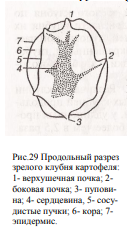

51. Анатомическое строение клубня, фазы развития и их значение в формировании урожая
Периоды росте и развития
1. от прорастания клубней до появления всходов
При наступлении биологического минимума t в
клубне повышается интенсивность дыхания,
крахмал превращается в сахара и передвигается к пазушным
почкам, они набухают и прорастают
2. от появления всходов до начала формирования генеративных органов
в этот период идет активное формирование стеблей, листьев и корневой системы
3. от появления бутонов до цветения растений (период формирования столонов)
Интенсивный рост ботвы, требуется наибольшее количество влаги и элементов питания. Последнее междоузлие удлиняется и образуется небольшой клубень
4. от цветения до прекращения прироста ботвы (активное клубнеобразование)
Интенсивный прирост клубней до 75% урожая (среднесуточные приросты составляют 2,5-2,8 т/га)
5. от прекращения прироста ботвы и начала ее отмирания до физиологического созревания клубней
Прирост клубней продолжается, но менее интенсивно, из ботвы
значительная часть питательных веществ переходит в клубни.
Завершается накопление пит. в-в, клубни достигают
физиологической спелости и переходят в состояние покоя.
В состоянии покоя клубни могут находиться до 2-4 мес. в
зависимости от сорта, степени зрелости и условий хранения.
Для предотвращения прорастания клубни
помещают в условия вынужденного покоя при t 2-4C
Анатомическое строение клубня.
Клубень картофеля – это видоизмененный стебель.
На разрезе молодого клубня в центре можно видеть сердцевину, окруженную кольцом проводящих пучков и камбием.
С наружи от камбия размещается широкий слой лубяной паренхимы вместе с сосудистыми пучками и эпидермис.
В центре клубня находится сердцевина с отходящими от неё лучами, которые направлены к почкам, размещенным на поверхности клубня.
Анатомическое строение клубня можно рассмотреть на его продольном разрезе невооруженным глазом.
